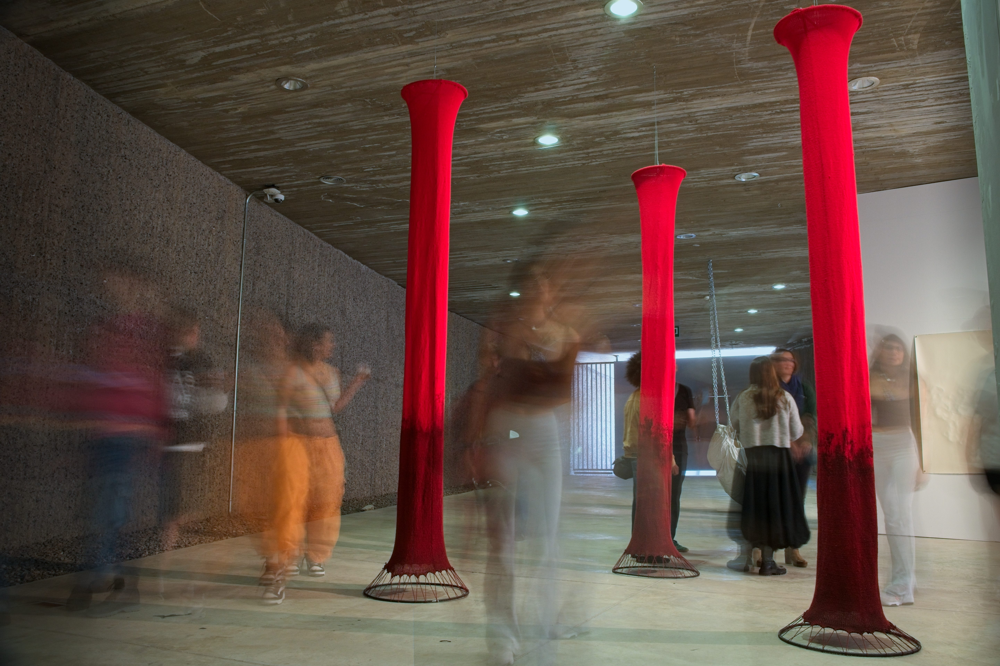
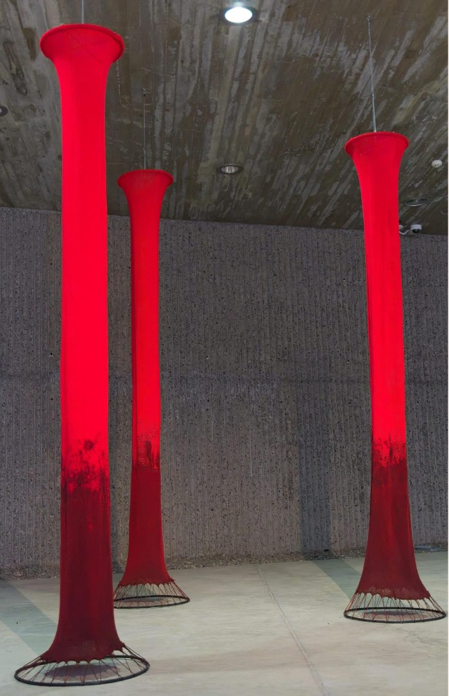
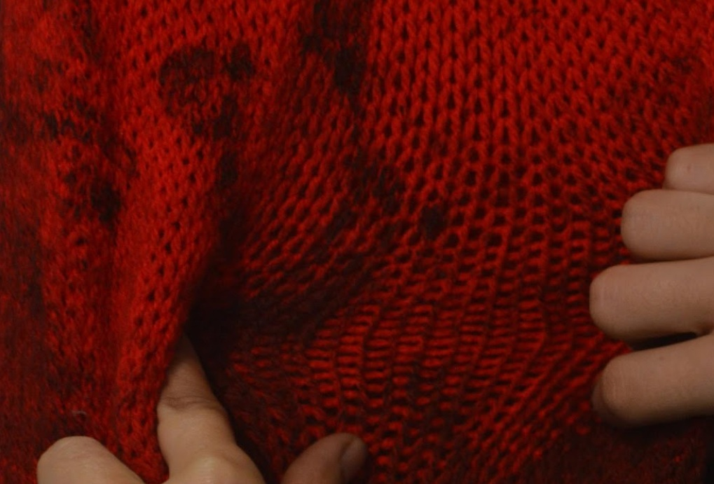

Galería




Artista visual
“Interpolaciones” es una instalación de arte textil donde se cruzan lo manual con lo conceptual, lo visible con lo oculto. Como en un tejido, las capas de memoria, materia y lenguaje se entrelazan, creando una obra que no solo se ve, sino que también se sostiene desde lo invisible. Es un espacio donde el dibujo se vuelve escultura y lo textil se convierte en pensamiento.


